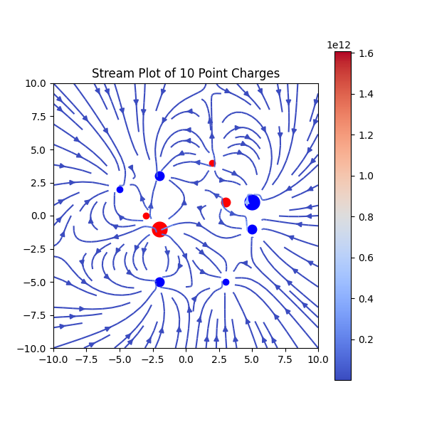
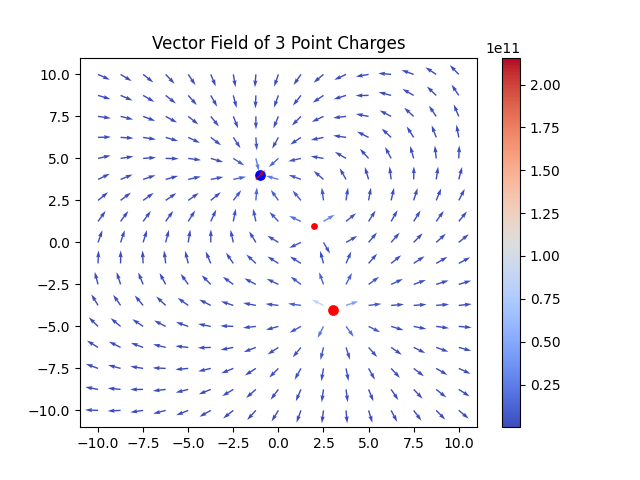

Bit of my Electircity and magnetism project. Here the program will ask you how many point charges you want, I will give them random properties for position, charge, maybe something else i dont remember, and them will plot them. Close and open the program to get another random set of your charges. The differences between the two are that one is a stream plot and the other a standard vector plot. Code on github
Stuff to download
 